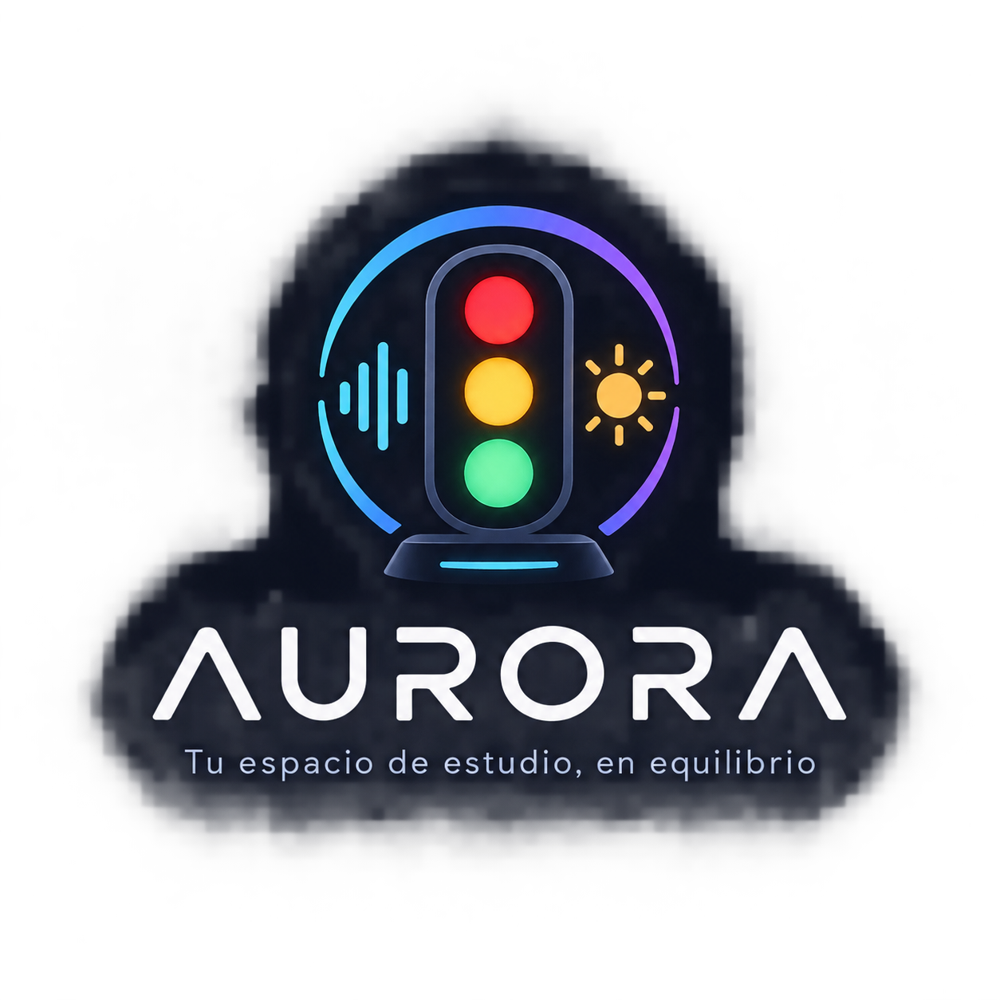

Un mejor entorno para aprender
Conocer AURORA¿Alguna vez has intentado estudiar, pero algo en tu entorno simplemente no te deja concentrarte? A veces pensamos que el problema está en nosotros, cuando en realidad las condiciones que nos rodean también pueden influir. El ruido, la iluminación y el ambiente pueden hacer que estudiar sea más difícil de lo que parece. Por eso nace AURORA, una propuesta pensada para darle una nueva mirada a nuestro entorno de estudio y descubrir cómo pequeñas cosas a nuestro alrededor pueden marcar la diferencia. ¿Estás listo para descubrirlo?
Estudiar no siempre depende de las ganas o del esfuerzo que le pongamos. Muchas veces, el lugar donde estudiamos puede convertirse en una dificultad sin que nos demos cuenta. El exceso de ruido, una iluminación inadecuada o un ambiente poco cómodo pueden interrumpir nuestra concentración y hacer que mantener la atención sea mucho más difícil. A pesar de esto, muchas personas no identifican fácilmente qué condiciones de su entorno están afectando su momento de estudio, por lo que terminan acostumbrándose a estas situaciones y continúan estudiando sin saber si realmente se encuentran en un ambiente adecuado.
Para responder a esta problemática nace **AURORA**, un dispositivo diseñado para ayudar a identificar las condiciones del entorno de estudio. A través de sensores, AURORA analiza factores como el **ruido y la iluminación** y muestra de manera sencilla el estado del ambiente mediante un sistema de luces tipo semáforo. Así, el estudiante puede reconocer rápidamente si las condiciones son adecuadas o si existe algún aspecto que debería mejorar. De esta manera, AURORA busca convertir la información del entorno en una guía visual, práctica y fácil de entender para crear mejores espacios de estudio.
Somos un grupo de estudiantes que busca desarrollar ideas que puedan aportar a situaciones que vivimos en nuestro día a día. A través de AURORA, queremos enfocarnos en algo tan común como el espacio donde estudiamos, entendiendo que el entorno puede influir en nuestra concentración y en la forma en que aprovechamos nuestro tiempo.
Creemos que tener un buen entorno de aprendizaje es importante porque estudiar no solo depende del esfuerzo y la motivación, sino también de las condiciones que nos rodean. Un espacio con una iluminación adecuada, menos distracciones y un nivel de ruido apropiado puede facilitar la concentración y hacer que el tiempo de estudio sea más cómodo y productivo. Por eso, consideramos importante prestar atención al ambiente en el que aprendemos y buscar formas de mejorarlo.
AURORA es un dispositivo inteligente pensado para ayudar a los estudiantes a tener un mejor ambiente mientras estudian. Su función principal es analizar algunas condiciones del espacio, como el nivel de ruido y la iluminación, para saber si el lugar es adecuado para concentrarse.
El dispositivo utiliza sensores para obtener información del entorno y, a partir de estos datos, muestra el resultado mediante un sistema de luces tipo semáforo. El color verde indica que las condiciones son adecuadas, el amarillo señala que hay algo que se podría mejorar y el rojo indica que el ambiente no es el más apropiado para estudiar.
Con AURORA buscamos crear una herramienta sencilla y fácil de entender que permita al estudiante identificar rápidamente qué está afectando su espacio de estudio y tomar decisiones para mejorarlo.
Utilizar AURORA es sencillo. Solo debes colocar el dispositivo cerca de tu espacio habitual de estudio y encenderlo para que comience a analizar las condiciones del entorno.
Coloca el dispositivo en tu espacio de estudio, preferiblemente cerca de donde normalmente estudias.
Activa AURORA para que sus sensores comiencen a obtener información del ambiente.
Revisa el color mostrado por el sistema de luces para conocer el estado de tu entorno.
Si el indicador señala que existe alguna condición que puede mejorarse, realiza los cambios necesarios en tu entorno de estudio.